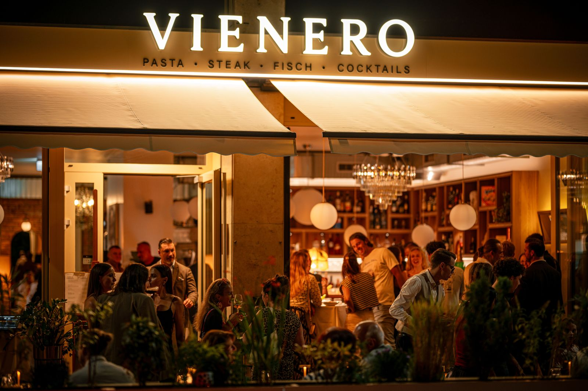
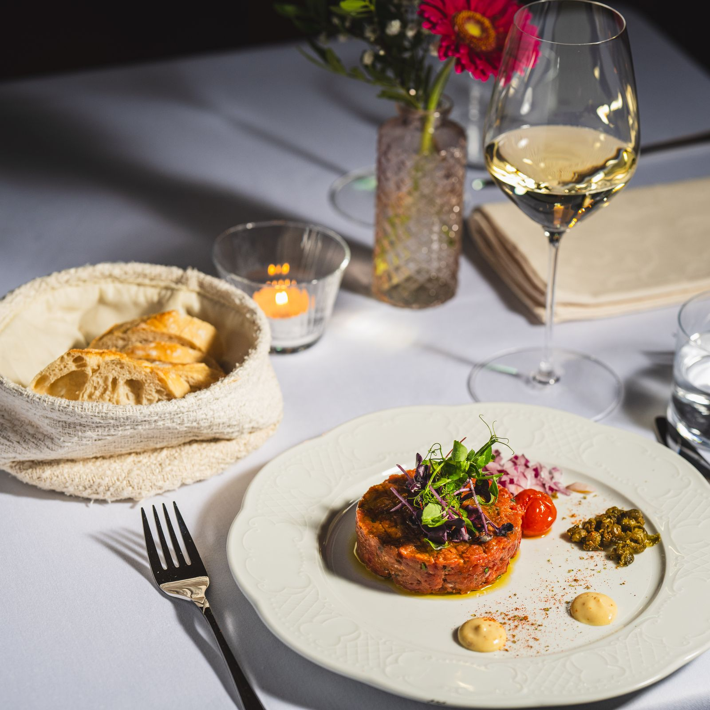
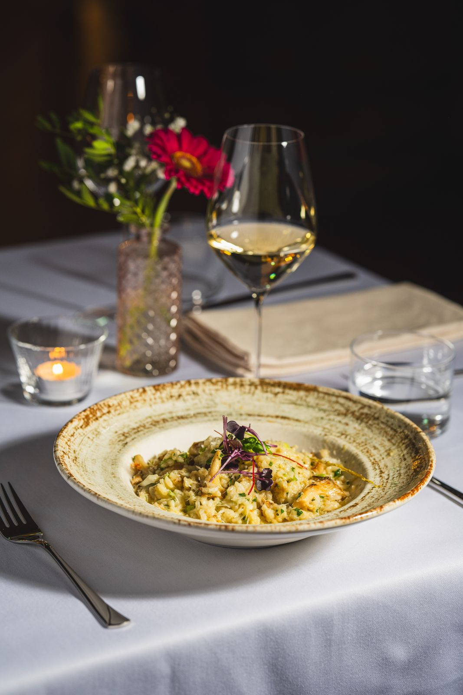

Restaurant and cocktail bar in the heart of Vienna
VIENERO sits right by Stadtpark in Vienna's first district, on Dr.-Karl-Lueger-Platz at the end of the Ringstrasse. Viennese classics meet the flavours of the Mediterranean: our Wiener Schnitzel in a light souffléed crust, fresh pasta with shaved black truffle, steaks and whole sea bass from the grill. Formerly Le Pic: same address, same hosts, new name.
Open every day. Lunch from noon (Sundays from 5 pm), dinner until 10 pm and signature cocktails at the bar until midnight. St. Stephen's Cathedral is about a ten minute walk away, and the U3 Stubentor station is right outside our door.



Prices in euro, taxes included. Cover charge 3.90 € per person.
Please ask our team about allergens.
Menu as PDF · Drinks and cocktails · Wine list
Plan your visit
Opening hours
Mon to Sat 12 pm to midnight
Sun 5 pm to midnight
Kitchen until 10 pm
Location
Dr.-Karl-Lueger-Platz 3
1010 Vienna, Austria
U3 Stubentor, by Stadtpark
Open in Google Maps
Reservations
+43 1 913 70 05
Reservierung@vienero.at
Book online
Groups of nine or more, please call.
Lunch in the city centre
Hungry for a classic? Read about our Wiener Schnitzel, truffle pasta, steaks, seafood, vegetarian dishes, Austrian wine and cocktails, or see what is near St. Stephen's Cathedral.
Working nearby or exploring the Ringstrasse? Monday to Friday from 12 to 3 pm we serve a business lunch: seasonal soup plus a main course of your choice for 15.90 €. The dishes change every week.